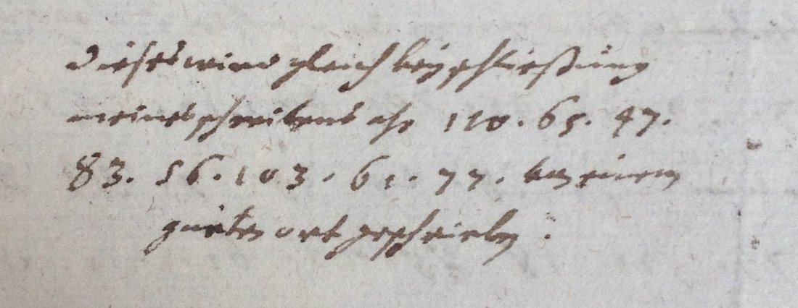

At a glanceNot solved · surveyed only
- The letters
- Johann Joachim von Rusdorff to Axel Oxenstierna, The Hague, 1628: five letters in German and Latin.
- Where
- Riksarkivet, Stockholm, Oxenstierna collection (volume E 701, Ser. B); DECODE R4333–R4337, “Riksarkivet_Rusdorff_Oxenstierna_1628-1” to “-5”, with no decipherment recorded. Formerly part of catalogue item 207.
- The cipher
- Two- and three-digit numbers separated by dots, set among clear words. Whether the five letters share one key is not known.
- How it was tried
- Not yet: the letters were opened on 21 September 2026, described and set aside.
- Still open
- Everything: transcription, the printed Oxenstierna correspondence, the key records of the same archive.
These letters were filed on this site until 14 October 2026 with nine other Riksarkivet records of catalogue item 207. They are different ciphers, each with its own page: the archbishop of Bremen’s letters of 1631 (deciphered), R4282 (deciphered by George Lasry), R4284, R4306 and the E 708 letters of 1633.
01The letters

Rusdorff, the Elector Palatine’s envoy, wrote from The Hague. DECODE has the year 1628 and nothing else: no sender, recipient or language. Its symbol set is “Numerical” for three records and “Alphabet” for two (R4334, R4335), which may mean a second system or only a different cataloguer. The archive’s own description says many of them carry notes that the cipher was never worked out.
02What remains
- All the cipher passages of the five letters. They have not been transcribed.
- To do: transcribe them; look for glosses; search the printed correspondence (Rikskanslern Axel Oxenstiernas skrifter och brefvexling, series II) and Rusdorff’s own printed papers; try the key records of the Chifferklaver boxes.
03Sources
Notes: targets/rusdorff1628/.